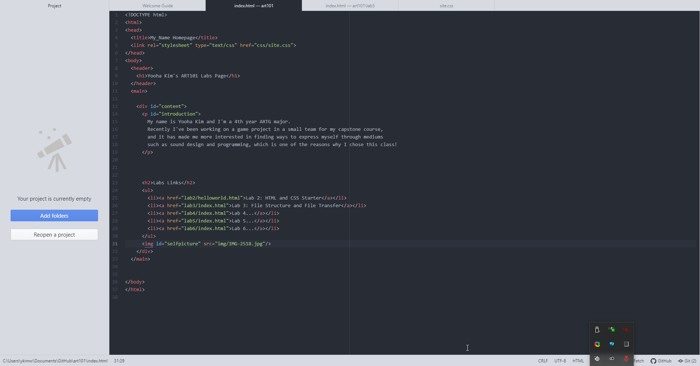

Subject
The subject of the lab was to teach us that understanding the overall structure and hierarchy that our files live in is important, and that it is necessary to keep organized in order to be able to callback to and utilize this hierarchy later.
Challenges/Summary of Efforts
One difficulty that I ran into this lab was trying to align my image on the front page and having the background color for the main section to stretch over towards the background image. Changing the file structure, connecting the CSS files, and committing/pushing to GitHub worked smoothly.
Screenshots
- The new file structure.
-  The main page HTML file.
- The lab3 page HTML file.
 The lab3 page seen in the browser.
The lab3 page seen in the browser.- The main page seen on the Github server.